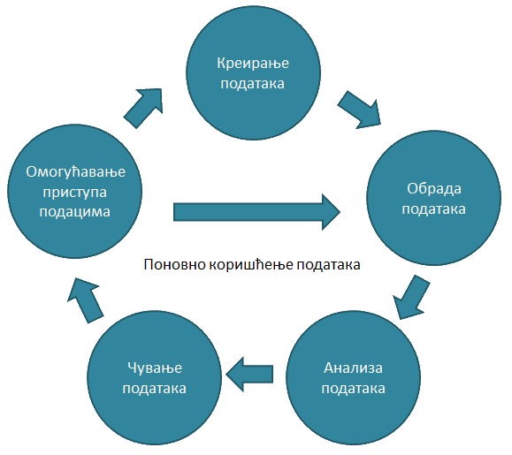

FAIR principi deljenja podataka
Obrazac za plan tretmana podataka
Obrazac ugovora o deljenju podataka
Lista preporučenih repozitorijuma časopisa Nature
Veb-sajt o upravljaju istraživačkim podacima (na srpskom jeziku)
Adekvatan tretman istraživačkih podataka odnosi se na pažljivo rukovanje i organizaciju istraživačkih podataka tokom čitavog ciklusa istraživanja u cilju efikasnog sprovođenja istraživačke aktivnosti i omogućavanja saradnje s drugim istraživačima.
U tretmanu istraživačkih podataka često se koristi koncept životnog ciklusa, koji pomaže istraživačima u razumevanju obima i značaja ovog aspekta istraživanja. Slika ispod pokazuje jedan takav životni ciklus podataka. Potrebe za adekvatnim tretmanom podataka spadaju u prve tri faze ovog životnog ciklusa: kreiranje ili prikupljanje podataka, obrada podataka i analiza podataka, tako da se rezultati mogu distribuirati kao neka vrsta akademskog izlaza, poput članka u časopisu. Međutim, sve faze zahtevaju adekvatan tretman, kako bi se osigurao detaljan i razumljiv opis prikupljenih podataka. Ako su podaci razumljivi, drugi istraživači mogu da ih koriste kako bi testirali validnost prvobitnih rezultata ili ponovo analizirali originalne podatke na potpuno drugačiji način.

Preciznije, ciljevi tretmana primarnih istraživačkih podataka su:1. zaštita primarnih istraživačkih podataka od mogućeg gubitka;
2. omogućavanje razmene primarnih istraživačkih podataka s drugim istraživačima i
3. obezbeđivanje otvorenosti, dostupnosti i ponovnog korišćenja primarnih istraživačkih podataka.
Zaštita primarnih istraživačkih podataka od mogućeg gubitka
a) Prvi aspekt je bezbednost i odnosi se na zaštitu od gubitka podataka kroz skladištenje i arhiviranje, uz dobru organizaciju i dokumentaciju;
b) Drugi aspekt je sigurnost i odnosi se na zaštitu podataka od neželjenih promena, što se može postići kontrolisanjem pristupa podacima; davanjem odgovarajuće licence ili organizacijom podataka koja onemogućuje promene.
Razmena istraživačkih podataka
Jedan od osnovnih principa otvorene nauke je razmena primarnih istraživačkih podataka s drugim istraživačima. Razmena istraživačkih podataka predstavlja efikasnu i odgovornu upotrebu javnog novca koji se ulaže u istraživanja i omogućuje istraživačima adekvatnu razmenu aktuelnih naučnih informacija. Moguće dobiti od deljenja primarnih istraživačkih podataka podataka su omogućavanje odgovora na nova istraživačka pitanja na osnovu postojećih podataka, promovisanje saradnje između različitih istraživačkih timova i različitih naučnih disciplina, razmena znanja o najboljim metodama za prikupljanje podataka i pratećim analizama, obezbeđivanje adekvatnog tretmana prikupljenih podataka, uz njihovo jasno specifikovanje i opisivanje, nezavisna provera dobijenih rezultata istraživanja i razvoj i testiranje novih istraživačkih metoda.
Primarni istraživački podaci dele se s drugim istraživačima najčešće iz dva razloga:
a) Provera i verifikacija analize podataka (provera replikabilnosti rezultata istraživanja)
b) Upotreba podataka u novim istraživanjima.
Razmenom istraživačkih podataka, koja podrazumeva deljenje svojih, ali i preuzimanje podataka drugih istraživača, mogu se ostvariti velike uštede u pojedinim naučnim oblastima, jer se omogućujuje višekratno korišćenje istih podataka za različite istraživačke ciljeve. Na primer, studenti doktorksih studija mogu preuzeti podatke iz postojećih repozitorijuma u cilju pisanja seminarskih radova, čime se postiže ušteda u vremenu, finansijskim sredstvima i ostalim resursima, neophodnim za realizaciju istraživanja.
Adekvatna priprema istraživačkih podataka za ponovnu upotrebu pretpostavlja da su podaci pristupačni, dostupni, interoperabilni i višekratni. Ovi zahtevi su poznati kao FAIR principi za tretman istraživačkih podataka.
FAIR principi
Pristupačnost (Findable)
F1. metapodaci primarnih istraživačkih podataka imaju globalno jedinstveni i trajni identifikator
F2. podaci se opisuju detaljnim metapodacima
F3. metapodaci primarnih istraživačkih podataka jasno i eksplicitno uključuju identifikator podataka koje opisuju
F4. metapodaci su registrovani ili indeksirani u repozitorijumu koji se može pretraživati
Dostupnost (Accesible)
A1. metapodaci se mogu preuzeti putem svog identifikatora koristeći standardizovani komunikacijski protokol
A1.1 protokol je otvoren, besplatan i univerzalno implementiran
A1.2 protokol dozvoljava postupak autentifikacije i procedure autorizacije, gde je to potrebno
A2. metapodaci su dostupni, čak i kada podaci nisu ili nisu više dostupni
Interoperabilnost (Interoperable)
I1. metapodaci koriste formalan, pristupačan, deljen i široko primenjiv jezik za predstavljanje informacija
I2. metapodaci koriste rečnik koji prati FAIR principe
I3. metapodaci obuhvataju kvalifikovane reference na druge metapodatke
Višekratna upotreba (Reusable)
R1. metapodaci su detaljno opisani tačnim i relevantnim atributima
R1.1. metapodaci se objavljuju uz jasnu i pristupačnu licencu za korištenje podataka
R1.2. metapodaci su povezani sa detaljnim izvorima iz kojih podaci poriču
R1.3. metapodaci ispunjavaju relevantne standarde u određenoj naučnoj ili umetničkoj oblasti
Podaci o ispitanicima i zaštita podataka o ličnosti
Prava i privatnost ljudskih subjekata koji učestvuju u istraživanjima moraju biti zaštićeni u svakom trenutku. Odgovornost svakog istraživača, nadležnog etičkog odbora, fakulteta ili instituta u okviru kog se sprovodi istraživanje je da zaštite prava subjekata i obezbede zaštitu podataka o ličnosti. Prije deljenja, podatke treba urediti tako da se uklone sve informacije o identitetu ispitanika i primene efikasne strategije kako bi se smanjili rizici od neovlašćenog otkrivanja identita sipitanika. Izbacivanje stavki iz baze podataka koje se odnose na identitet učesnika u istraživanju naziva se anonimiziranje baze podataka ili deidentifikacija podataka. Pored uklanjanja direktnih podataka o identitetu, kao što su imena, adrese, brojevi telefona ili imejl adrese, istraživači treba da uklone i sve indirektne informacije koje bi mogle dovesti do "deduktivnog otkrivanja" identiteta učesnika. Veća verovatnoća za deduktivno otkrivanje pojedinačnih subjekata postoji kod neuobičajenih karakteristika ili neobičnih varijabli. Na primer, uzorci ispitani na malim geografskim područjima ili retkim populacijama mogu obuhvatati poseban rizik u pogledu zaštite identiteta subjekta.
Istraživači mogu koristiti različite metode kako bi smanjili rizik od identifikacije subjekta. Jedan od mogućih pristupa je izbacivanje dela podataka. Drugi pristup je promena podataka na način koji neće ugroziti statističke analize, ali će štititi identitete pojedinačnih subjekata. Jedan od načina je i ograničavanje pristupa podacima koji mogu otkriti identitet ispitanika. Neki istraživači mogu koristiti hibridne metode, kao što je stavljanje redigovanog skupa podataka u opštu upotrebu, ali omogućavanje pristupa osetljivijim podacima sa strožijim kontrolama samo uz posebnu dozvolu.Istraživači koji traže pristup pojedinačnim podacima obično su obavezni da pristupe sporazumu o razmeni podataka. Ugovori ili sporazumi o razmeni podataka, koji se mogu nazivati "sporazum o licenciranju" ili "sporazum o distribuciji podataka", obično uključuju zahteve za zaštitu privatnosti i poverljivosti podataka učesnika. Oni mogu zabraniti primaocu prenos podataka drugim korisnicima ili zahtevati da se podaci koriste samo za istraživačke svrhe, a mogu obuhvatati i kazne za kršenja ovih pravila. Za više informacija o alternativnim mehanizmima za razmenu podataka pogledajte i odeljak koji se odnosi na "Metode za deljenje podataka". U većini slučajeva, deljenje i arhiviranje podataka je moguće bez ugrožavanja poverljivosti i prava privatnosti. Procedure usvojene za razmenu podataka pri zaštiti privatnosti trebalo bi prilagoditi svakom posebnom skupu podataka.
Istraživači koji sprovode klinička ispitivanja i imaju nameru da dele svoje podatke treba pažljivo da razmišljaju o istraživačkom dizajnu, strukturi saglasnosti za učešće u ispitivanju i strukturi matrice podataka pre započinjanja studije. Na primer, mnoga klinička ispitivanja u ranoj fazi koriste male uzorke, što otežava zaštitu privatnosti učesnika. Takođe, longitudinalna istraživanja predstavljaju poseban izazov, zbog potrebe za zadržavanjem identifikatora kako bi se povezali pojedinačni podaci prikupljeni u različitim vremenskim intervalima.
Politika otvorenih podataka podrazumeva da razmena podataka iz kliničkih ispitivanja mora biti kontrolisana, što podrazumeva pristup podacima samo onim istraživačima koji pristanu da čuvaju privatnost subjekata i obezbede sredstva za zaštitu poverljivosti podataka.
Istraživači koji sprovode ispitivanja s ljudima moraju da se pridržavaju Zakona o zaštiti podataka o ličnosti i kodeksa o akademskom integritetu koje poseduje većina ustanova.
U većini slučajeva, nije prikladno da istraživač koji je prvi prikupio podatke postavlja ograničenja u vezi s istraživačkim pitanjima ili metodama koje bi drugi istraživači mogli da primene s podacima. Stoga je prikladno da saglasnost za učešće u istraživanju uključuje i stav da će podaci biti deljeni s ostalim istraživačima. Takođe, nije prikladno da istraživač koji je prikupio podatke zahteva koautorstvo kao uslov za razmenu podataka. Negov doprinos prepoznaje se kroz adekvatno citiranje preuzetih podataka. Međutim, kada se istraživač opredeli za kontrolisan pristup podacima, neophodno je da precizno definiše uslove pod kojima se oni mogu dalje deliti ili na drugi način koristiti.
Mnoga istraživanja ne uključuju ljudske subjekte. Konačni istraživački skup podataka iz studija koji ne uključuju ljudske subjekte generalno ne bi trebalo ograničiti zahtevima koji se smatraju potrebnim i odgovarajućim za ljude.
Deponovanje podataka
Budući da u Srbiji nisu razvijeni repozitorijumi za deponovanje istraživačkih podataka, preporuka je da istraživači pronađu odgovarajući međunarodni repozitorijum i svoje podatke deponuju u skladu s principima koje je taj repozitorijum razvio. Na primer, iscrpnu listu repozitorijuma podataka nudi časopis Nature.
Creative Commons licence
Primarni podaci treba da budu zaštićeni standardizovanom mašinski čitljivom licencom (poželjno je da to budu licence CC0, CC-BY ili CC BY-SA) i povezani sa publikacijama u kojima su objavljeni rezultati dobijeni na osnovu tih podataka. Odabir licence zavisi od prirode podataka i/ili faze u kojoj se nalazi istraživački postupak. Potrebno je proučiti vrste licenci pre odabira one koja je najprikladnija za specifične istraživačke podatke.
| Kopiranje i deljenje | Obavezno citiranje | Komercijalna upotreba | Prilagođavanje i menjanje |
Promena licence |
||
| CC0 (javni domen) |
||||||
 |
BY | |||||
 |
BY-SA | |||||
 |
BY-ND | |||||
 |
BY-NC | |||||
 |
BY-NC-SA | |||||
 |
BY-NC-ND | |||||
Attribution 4.0 International (CC BY 4.0)
Možete slobodno:
- Deliti - kopirati i distribuirati materijal u bilo kom mediju ili formatu
- Adaptirati - preuređivati, transformisati i nadograditi materijal za bilo koju svrhu, čak i komercijalnu.
- Davalac licence ne može oduzeti ove slobode sve dok se slede uslovi licenciranja.
Uslovi koji važe za ovu licencu:
- Citiranje - Morate navesti odgovarajući citat, omogućiti vezu s licencom i naznačiti ako su izvršene izmene materijala. Možete to učiniti na bilo koji razuman način, koji ne podrazumeva da davalac licence odobrava vašu upotrebu materijala.
- Nema dodatnih ograničenja - ne smete da primenjujete pravne uslove ili tehnološke mere koje zakonski ograničavaju druge da rade bilo šta što dozvoljava ova licenca.
Attribution-ShareAlike 4.0 International (CC BY-SA 4.0)
Možete slobodno:
- Deliti - kopirati i distribuirati materijal u bilo kom mediju ili formatu
- Adaptirati - preuređivati, transformisati i nadograditi materijal za bilo koju svrhu, čak i komercijalnu.
- Davalac licence ne može oduzeti ove slobode sve dok se slede uslovi licenciranja.
Uslovi koji važe za ovu licencu:
- Citiranje - Morate navesti odgovarajući citat, omogućiti vezu s licencom i naznačiti ako su izvršene izmene materijala. Možete to učiniti na bilo koji razuman način, koji ne podrazumeva da davalac licence odobrava vašu upotrebu materijala.
- Deli slično - Ako preuređujete, transformišete ili nadograđujete materijal, morate distribuirati svoje doprinose pod istom licencom kao i original.
- Nema dodatnih ograničenja - ne smete da primenjujete pravne uslove ili tehnološke mere koje zakonski ograničavaju druge da rade bilo šta što dozvoljava ova licenca.
Attribution-NonCommercial 4.0 International (CC BY-NC 4.0)
Možete slobodno:
- Deliti - kopirati i distribuirati materijal u bilo kom mediju ili formatu
- Adaptirati - preuređivati, transformisati i nadograditi materijal
- Davalac licence ne može oduzeti ove slobode sve dok se slede uslovi licenciranja.
Uslovi koji važe za ovu licencu:
- Citiranje - Morate navesti odgovarajući citat, omogućiti vezu s licencom i naznačiti ako su izvršene izmene materijala. Možete to učiniti na bilo koji razuman način, koji ne podrazumeva da davalac licence odobrava vašu upotrebu materijala.
- Nekomercijalno - ne možete koristiti materijal u komercijalne svrhe.
- Nema dodatnih ograničenja - ne smete da primenjujete pravne uslove ili tehnološke mere koje zakonski ograničavaju druge da rade bilo šta što dozvoljava ova licenca.
Attribution-NoDerivatives 4.0 International (CC BY-ND 4.0)
Možete slobodno:
- Deliti - kopirati i distribuirati materijal u bilo kom mediju ili formatu za bilo koju svrhu, čak i komercijalnu.
Uslovi koji važe za ovu licencu:
- Citiranje - Morate navesti odgovarajući citat, omogućiti vezu s licencom i naznačiti ako su izvršene izmene materijala. Možete to učiniti na bilo koji razuman način, koji ne podrazumeva da davalac licence odobrava vašu upotrebu materijala.
- Bez izmena - Ako preuređujete, transformišete ili nadograđujete materijal, ne smete distribuirati modifikovani materijal.
- Nema dodatnih ograničenja - ne smete da primenjujete pravne uslove ili tehnološke mere koje zakonski ograničavaju druge da rade bilo šta što dozvoljava ova licenca.
Attribution-NonCommercial- ShareAlike 4.0 International (CC BY-NC-SA 4.0)
Možete slobodno:
- Deliti - kopirati i distribuirati materijal u bilo kom mediju ili formatu
- Adaptirati - preuređivati, transformisati i nadograditi materijal
- Davalac licence ne može oduzeti ove slobode sve dok se slede uslovi licenciranja.
Uslovi koji važe za ovu licencu:
- Citiranje - Morate navesti odgovarajući citat, omogućiti vezu s licencom i naznačiti ako su izvršene izmene materijala. Možete to učiniti na bilo koji razuman način, koji ne podrazumeva da davalac licence odobrava vašu upotrebu materijala.
- Nekomercijalno - ne možete koristiti materijal u komercijalne svrhe.
- Deli slično - Ako preuređujete, transformišete ili nadograđujete materijal, morate distribuirati svoje doprinose pod istom licencom kao i original.
- Nema dodatnih ograničenja - ne smete da primenjujete pravne uslove ili tehnološke mere koje zakonski ograničavaju druge da rade bilo šta što dozvoljava ova licenca.
Attribution-NonCommercial- NoDerivatives 4.0 International (CC BY-NC-ND 4.0)
Možete slobodno:
- Deliti - kopirati i distribuirati materijal u bilo kom mediju ili formatu
- Davalac licence ne može oduzeti ove slobode sve dok se slede uslovi licenciranja.
Uslovi koji važe za ovu licencu:
- Citiranje - Morate navesti odgovarajući citat, omogućiti vezu s licencom i naznačiti ako su izvršene izmene materijala. Možete to učiniti na bilo koji razuman način, koji ne podrazumeva da davalac licence odobrava vašu upotrebu materijala.
- Nekomercijalno - ne možete koristiti materijal u komercijalne svrhe.
- Bez izmena - Ako preuređujete, transformišete ili nadograđujete materijal, ne smete distribuirati modifikovani materijal.
- Nema dodatnih ograničenja - ne smete da primenjujete pravne uslove ili tehnološke mere koje zakonski ograničavaju druge da rade bilo šta što dozvoljava ova licenca.
Citiranje podataka
Citiranje podataka je veoma važno zato što omogućuje istraživaču odgovarajući kredit i priznanje naučnom naporu u procesu prikupljanja podataka. Takođe, odgovarajuće citiranje podataka omogućuje kredit repozitorijumima u kojima su ti podaci arhivirani na duži rok. Citiranje podataka je odgovornost istraživača koji prikupljaju i održavaju matrice s podacima i pravilnim navodjenjem svih neophodnih informacija obezbeđuje zaštitu od mogućih plagijata.
Adekvatno citiranje podataka omogućava drugim istraživačima da lakše lociraju i pristupe skupu podataka u svrhu replikacije ili verifikacije njihovih rezultata, što bi trebalo da predstavlja deo dobre naučne prakse. Dakle, jednostavno lociranje i pristup podacima mogu olakšati njihovu dostupnost i ohrabriti mogućnost ponovne upotrebe.
Uvođenjem prakse citiranja podataka kreira se formalizovan sistem prepoznavanja i nagrađivanja istraživača koji su prikupljali podatke, što predstavla važan doprinos naučnoj zajednici. Citiranje podataka omogućuje lako praćenje uticaja koji određeni skup podataka ima, kroz publikacije u kojima su citirani. Sistem formalnog citiranja podataka u naučnim publikacijama može povećati transparentnost procesa kreiranja podataka, ali i podstaći kvalitetniji tretman istraživačkih podataka.
Standardi za citiranje podataka
Praksa citiranja podataka još uvek nije ujednačena, te postoje različiti standardi. Proces citiranja podataka je sličan citiranju naučnih publikacija. Neophodno je da citat sadrži sledeće podatke: Autor(i), godina, naslov, arhiv (repozitorijum) i datum pristupa.
Međutim, citiranje podataka može biti otežano usled dinamičnije prirode samih podataka u odnosu na klasičan proces citiranja naučnih publikacija. Na primer, skup podataka može se sastojati od više verzija neobrađenih podataka ili može biti deo većeg skupa podataka. Sam skup podataka može vremenom da se menja, budući da istraživači mogu da modifikuju ili dodaju više podataka. Prema tome, skupu podataka je potreban trajni identifikator ili lokator koji se može dodati u citat kako bi se skup podataka adekvatnije pratio.
Trajni identifikatori i lokatori podataka
Svaka datoteka bi trebalo da ima svoj identifikator i lokator. Trajni identifikator je jedinstveni veb-kompatibilni, alfanumerički kod, koji ukazuje na određeni skup podataka koji će se sačuvati na duži rok. Identifikator skupova podataka sadrži informacije o podacima, kao što je naslov, naziv datoteke ili čak identifikacijski ID objekta. Primeri identifikatora su UUID (Univerzalno jedinstveni identifikator), OID (Identifikator predmeta), LSID (Identifikator nauke o životu).
Lokator skupa podataka pomaže pri pronalaženju mesta na kome je taj skup pohranjen. Primeri lokatora su URL adrese, direktorijumi ili registrirovani lokatori. Registrovani lokator je jedinstveni kod koji ukazuje na specifičan skup podataka koji je obično odvojen od metapodataka. Primeri lokatora podataka su DOI (Identifikator digitalnog objekta), APK (Ključ arhivskog izvora), URL adrese, PURL, KSRI.
Primeri citiranih podataka
Istraživač bi trebalo da odabere onaj standard za citiranje podataka koji je važeći u njegovoj naučnoj oblasti ili koji preporučuje repozitorijum u kom su podaci arhivirani. Ovde su navedeni samo neki od primera citiranih podataka:
Cool, H. E. M. and Bell, M. (2011), Excavations at St Peter’s Church, Barton-upon-Humber [dataset] (York: Archaeology Data Service), doi: 10.5284/1000389
Frederico Girosi; Gary King, 2006, Cause of Death Data, http://hdl.handle.net/1902.1/UOVMCPSWOL UNF:3:9JU+SmVyHgwRhAKclQ85Cg== IQSS Dataverse Network [Distributor] V3 [Version].
Zwally, H.J., R. Schutz, C. Bentley, J. Bufton, T. Herring, J. Minster, J. Spinhirne, and R. Thomas. 2003. GLAS/ICESat L1A Global Altimetry Data V018, 15 October to 18 November 2003. National Snow and Ice Data Center. dataset accessed 2011-07-21 at doi:10.3334/NSIDC/gla01.
Korišćene reference
DataCite Metadata Working Group. (2016). DataCite Metadata Schema Documentation for the Publication and Citation of Research Data. Version 4.0. DataCite e.V. http://doi.org/10.5438/0012. Accessed August 11, 2018
GoFAIR. https://www.go-fair.org/fair-principles/ Accessed August 12, 2018